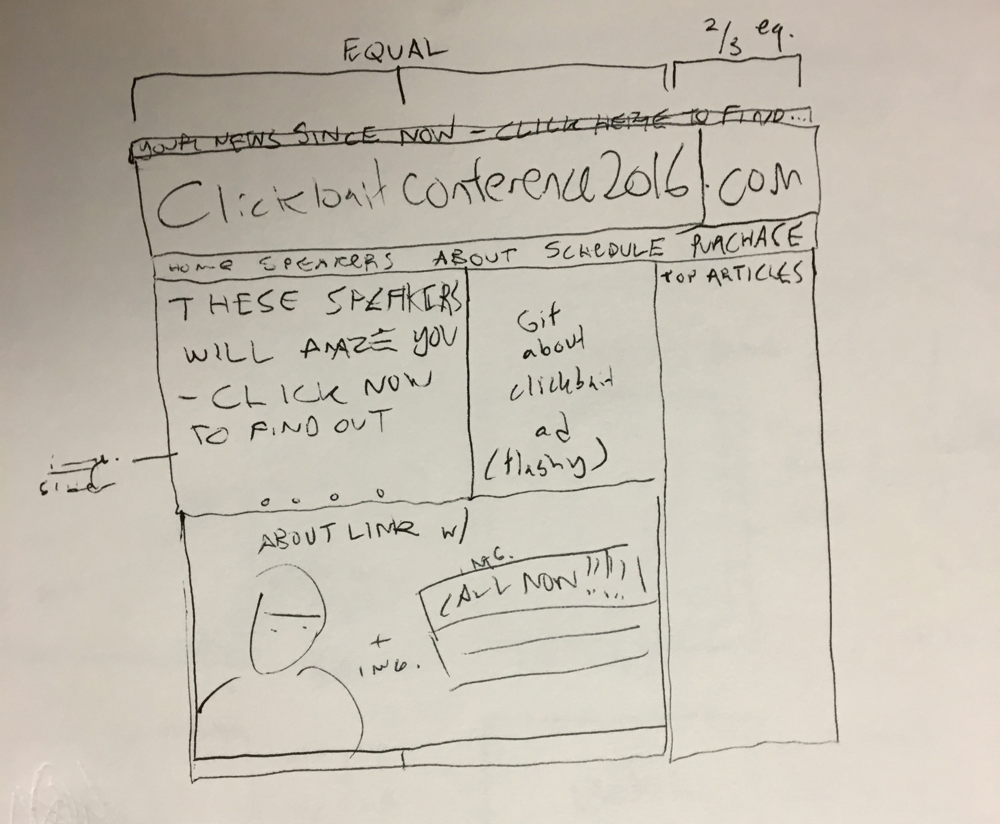
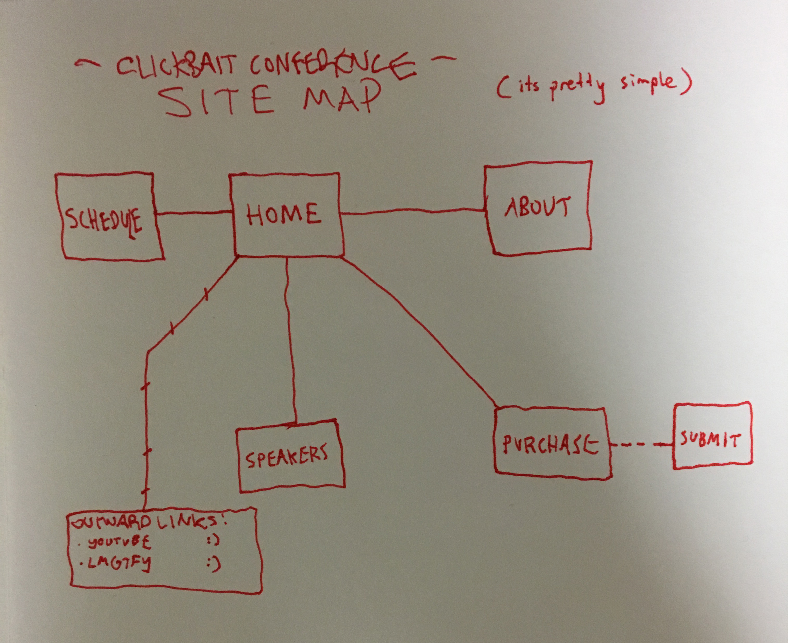
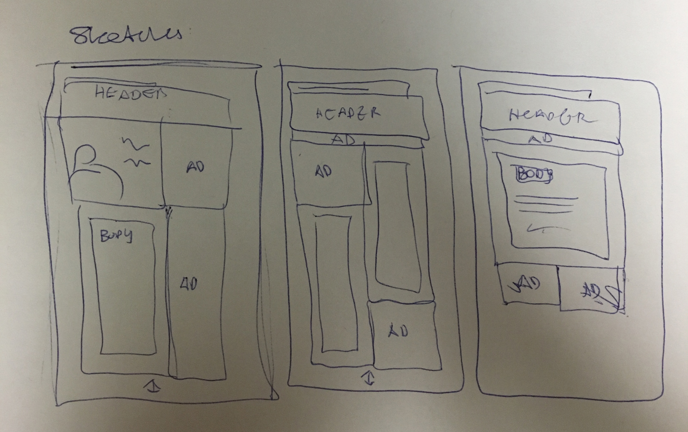
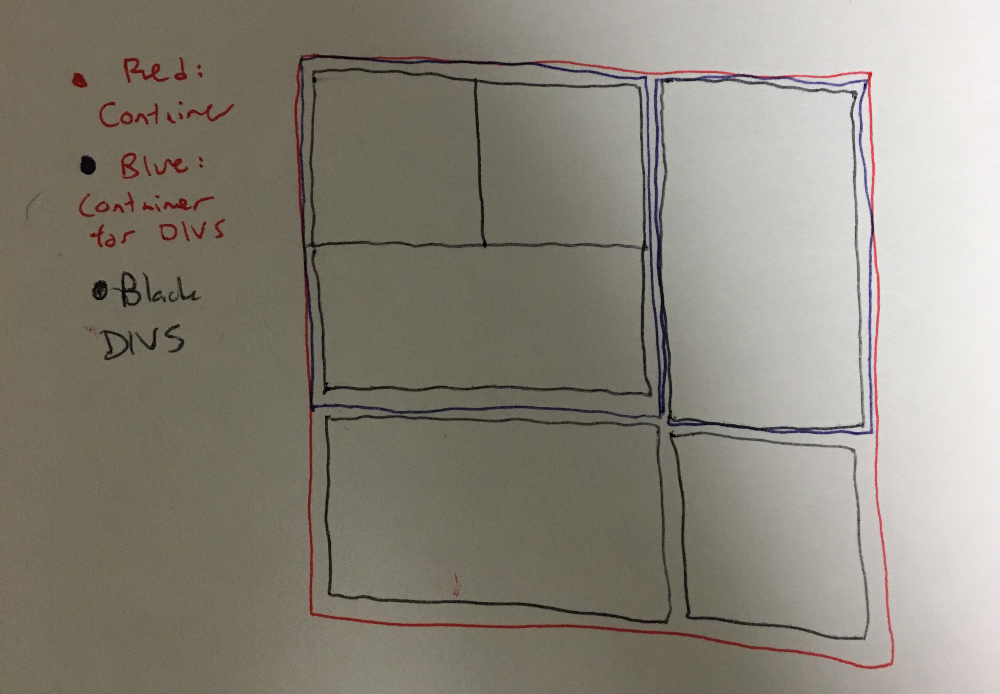

Hello Mr. Ramos! I decided to assemble what I have to present to you on my website.
- - Info About Website - -
This website is about a "clickbait" conference. Clickbait can be related to articles, videos, any sort of content - but a general definition of clickbait is "content that makes you want to view it, through embellishment or any other means". This practice of "journalism" can be slimy at times, leaving journalistic integrity behind. This website is meant to parody clickbait websites and their flashy, colorful, ad-filled style.The pages in the website each have their own hyper, attention-grabbing persona - and anyone who would want to go to a conference like this would be immediately grabbed by the appeal, or at the very least understanding of what the website is.
The audience of this website is primarily two types of people. The first are people who are actually attracted to these kinda of websites. By "these kinds of websites" I mean the type of websites that try to pull you in around every corner, the type of websites that try to make you read everything at once and then click on at least one thing. The other type of person that the website is designed for is the type of person who wants to learn about this sort of journalism, and how to do it. Once they go to the "speakers" section, the reader should be pulled in enough to at least consider going, and by those means the website (the clickbait) has worked.
- - Site Layout - -
This page was the basis for every other page on the website.
- - SiteMap - -
A simple layout of the website.
- - Style Tiles - -
Click to download the Style Tile I created.
If this doesn't work, click this linkI only had one initial style tile - the website evolved heavily after, and the progession came naturally - unfortunately without any final style tiles.
- - SiteMap - -
A couple of sketches for a "representative" page of the website.
- - How I Sectioned DIVS - -
The divs were sectioned as such. A container div would hold tile divs, which held pictures and other content. If the divs couldn't be arranged by floating left, then they would be asssembled in a structual div, seen in blue holding 3 style divs. The structural div could then be placed next to something of the same size, or another structural div with the same height that held another amount of tile divs.

The code and such is uploaded to the Dropbox. Happy Holidays!